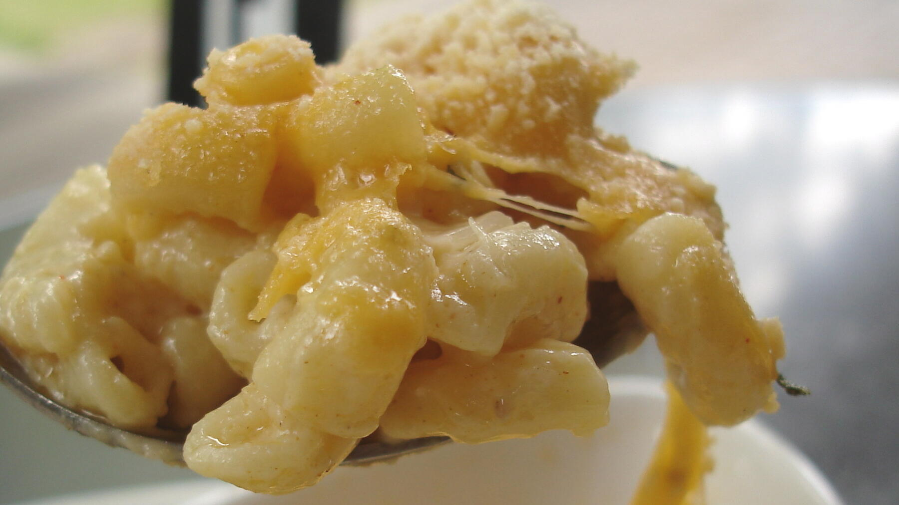

Zurück zur Übersicht
Mac and Cheese aus dem Ofenvom Herd
Überbackene Maccheroni mit Cheddar und Gruyère, oben goldbraun gegrillt.Schnelle Maccheroni in samtiger Soße aus Cheddar, Schmelzkäse und geräuchertem Gouda.
- Zeit
- 45 Min.25 Min.
- Schwierigkeit
- mittelleicht
- Kategorie
- Pasta
- Ernährung
- vegetarischfleisch
Zutaten
Portionen
- 450 gGroße Hörnchennudeln
- 270 gMittelalter Cheddar, gerieben
- 270 gGruyère, gerieben
- 110 gButter
- 75 gMehl
- 720 mlVollmilch
- 300 mlSahne
- 450 gKleine Hörnchennudeln
- 55 gButter
- 40 gMehl
- 14 gHühnerbrühe-Pulver
- 4 gGeräuchertes Paprikapulver
- 4 gZwiebelpulver
- 600 mlVollmilch
- 240 mlSahne
- 180 gKräftiger Cheddar, gerieben
- 180 gAmerican Cheese (Schmelzkäse), gerieben
- 90 gGeräucherter Gouda, gerieben
- Salz
Zubereitung
- Backofen auf 165 °C vorheizen, eine Auflaufform (etwa 2,8 l) einfetten.
- Nudeln in reichlich Salzwasser 1–2 Minuten kürzer kochen als auf der Packung angegeben. Cheddar und Gruyère mischen.
- Butter schmelzen, Mehl einrühren und 30 Sekunden anschwitzen. Milch nach und nach einrühren, Sahne zugeben und erhitzen, bis die Soße glänzt und leicht andickt.
- Vom Herd nehmen und die Hälfte der Käsemischung einrühren, bis sie geschmolzen ist. Nudeln unterheben und abschmecken.
- Die Hälfte der Nudeln in die Form geben, die Hälfte des restlichen Käses darüberstreuen, dann die übrigen Nudeln und den restlichen Käse schichten.
- 15–20 Minuten backen, bis es blubbert. Zum Schluss den Grill einschalten und die Oberfläche kurz bräunen. Heiß servieren.
- Nudeln in stark gesalzenem Wasser 1–2 Minuten kürzer kochen als auf der Packung angegeben. Vor dem Abgießen etwa 240 ml Kochwasser aufheben.
- Butter bei mittlerer Hitze schmelzen, Mehl einrühren und 1–2 Minuten hellgolden anschwitzen. Brühepulver, Paprika und Zwiebelpulver einrühren.
- Milch und Sahne nach und nach einrühren, unter ständigem Rühren aufkochen und 2–3 Minuten sämig einkochen.
- Vom Herd nehmen, erst die Hälfte des Käses einrühren, dann den Rest. Bei Bedarf nachsalzen.
- Nudeln unter die Soße heben. Ist sie zu dick, 1–2 EL Kochwasser zugeben.
Quelle: nach einem Rezept von Joshua Weissman.